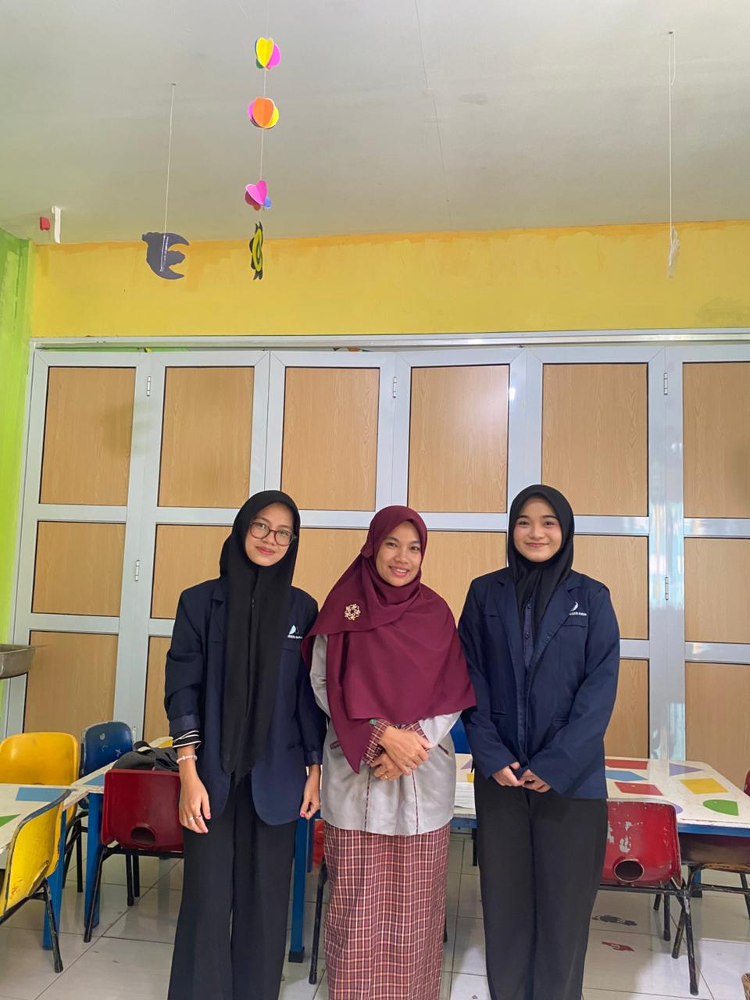
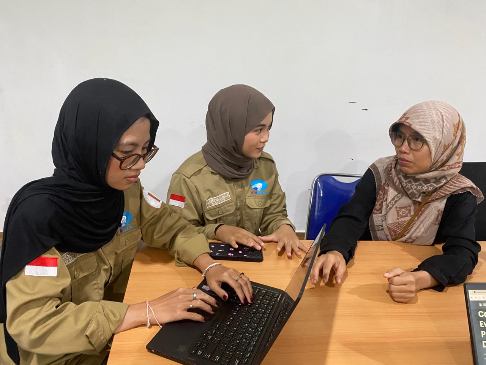
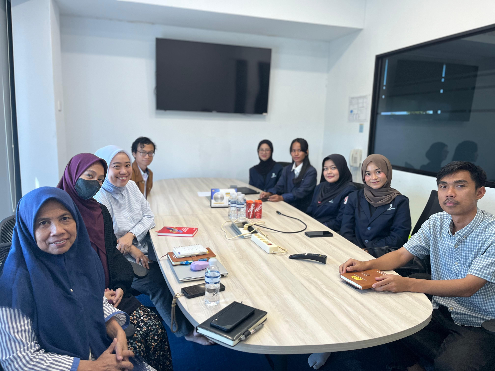
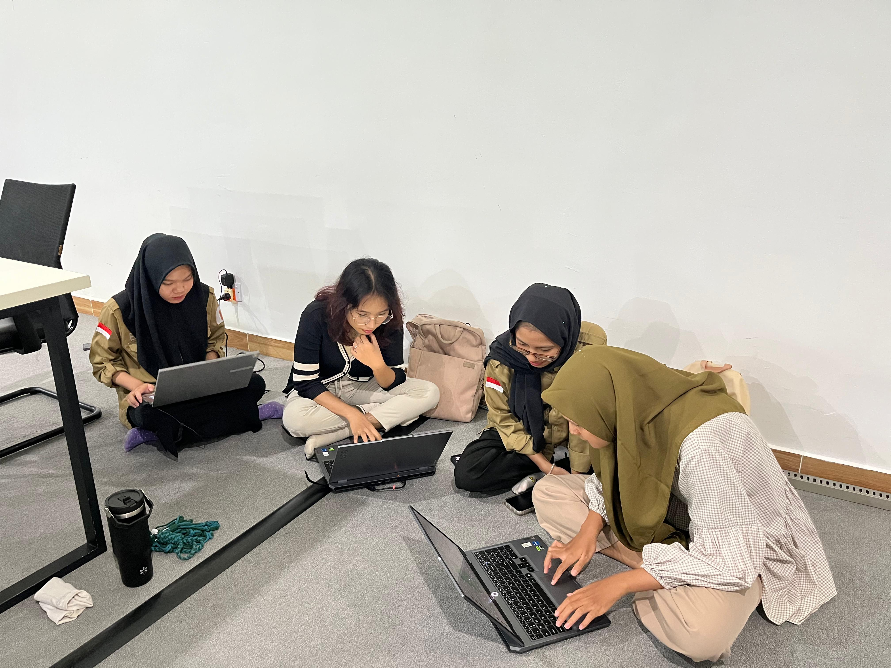

Behind the Scenes
Project Documentation
Moments captured during client meetings, team collaboration sessions, and project development with the project manager.

Meeting with Client

Discussion with Project Manager

Photo with Team

Photo with Client

Meeting with Client

Working on Projects with a Team